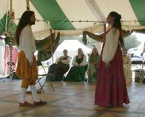
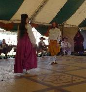

{kind=link}
{kind=link}
{kind=link}

The best innovation of the war was the construction of a plywood floor for the dance tent. Philip of the Marche organized construction and did more than his fair share of the work. The Autocrats chipped in $2000, which we exceeded by about $200. A large number of volunteers helped construct the floor.
In addition to many classes second week, the Caroso Ball and a pre-1600 dance party were held in the new dance tent.
We offered to mail out advance copies of the dance music (organized by Juliana), and received 13 requests. The overall dance coordinator was Joshua ben Chaim haLevi.
|  | The opening of the Caroso Ball, Gregory and Alejandra dance a galliard. Credit: Etienne de Clermont |
|  | Another angle of the same. Credit: Adele des Fontaines. |
| Mara and Del dancing a galliard, while Gregory steals Mara's chair to flirt with Alejandra. Credit: Joshua ben Chiam haLevi. | |
|
| The crowd at the Masked Ball. Credit: Del. |
The Ball will begin at 9pm Monday evening and will last until at least Midnight. Please be prompt.
Gathering Peascods (ECD)
Rostiboli (15cI)
Montarde (Arbeau)
Carmans Whistle Canary (16cI)
Parsons Farewell (ECD)
Black Almain (English Measure)
The Pinwheel Game (16cI)
Horses' Branle (Arbeau)
Break: Ballo del Fiori (16cI)
Official Bransle (Arbeau)
Galliard (16c)
Jenny Pluck Pears (ECD)
Gelosia (15cI)
Madam Cecilia Alman (English Measure)
Lo Spagnoletto (16cI)
Hearts Ease/Rufty Tufty (suite) (ECD)
Petit Riense (15cI)
Break: Lyonnaise Galliard
A Pavane: Carolingian, or improvise (Arbeau)
A Saltarello (15cI)
New Boe Peep (ECD)
Anello (15cI)
Pease Bransle (Arbeau)
Bizzaria d'amore (16cI)
Picking of Sticks (ECD)
Amoroso (15cI)
The Band Begins Turning Into Pumpkins
Break: more of the Pinwheel Game
Trenchmore (ECD)
Washerwomans Bransle (Arbeau)
Sellengers Round (ECD)
Turkish Bransle (after the fashion of Arbeau)
Black Nag (ECD)
Petit Riense (15cI) (now that it's less crowded)
Hyde Park (ECD)
invites
His Friends, Acquaintances, Total Strangers, and People Who Go To Parties Just For the Food
To Attend
A Party
at which there will be
Food and Dancing
Tuesday Evening
Beginning at 8 o'clock
in the Dance Tent
Dances will be from the 15th and 16th Centuries
Date |
Time |
Class Title |
Location |
Subject |
Limit |
Fee |
Instructor |
Length |
| Wed, 8 | 4:00 PM | Introduction to Dance | Barn | Dance, European | 0 | 0 | Pennsic Dancemasters | 1 |
| Wed, 8 | 7:00 PM | Dance Potpourri with Uncle Sion | Barn | Dance, European | 0 | 0 | Sion Andreas o Wynedd | 1 |
| Thu, 9 | 11:00 AM | Galliard Technique | Barn | Dance, European | 0 | 0 | Henry of Maldon | 2 |
| Thu, 9 | 4:00 PM | Introduction to Dance | Barn | Dance, European | 0 | 0 | Pennsic Dancemasters | 1 |
| Thu, 9 | 7:00 PM | Dance Potpourri with Uncle Sion | Barn | Dance, European | 0 | 0 | Sion Andreas o Wynedd | 1 |
| Fri, 10 | 11:00 AM | Bassedanze of Master Guglielmo | Barn | Dance, European | 0 | 0 | Rosina del Bosco Chiaro | 2 |
| Fri, 10 | 1:00 PM | I Lost My Partner! | Barn | Dance, European | 0 | 0 | Craig Shupee | 1 |
| Fri, 10 | 2:00 PM | New Dances in Old Styles | Barn | Dance, European | 0 | 0 | Henry of Maldon | 1 |
| Fri, 10 | 3:00 PM | Dancing the Old Measures | Barn | Dance, European | 0 | 0 | Henry of Maldon | 1 |
| Fri, 10 | 4:00 PM | Introduction to Dance | Barn | Dance, European | 0 | 0 | Pennsic Dancemasters | 1 |
| Sat, 11 | 10:00AM | Galliard Variations | Barn | Dance, European | 0 | 0 | Henry of Maldon | 2 |
| Sat, 11 | 12:00 PM | Heys Are Not for Horses | Barn | Dance, European | 0 | 0 | Alina of Foxwood | 1 |
| Sat, 11 | 2:00 PM | Preparation for the Ball | Dance | Dance, European | 0 | 0 | Judith de Northumbria | 2 |
| Sat, 11 | 4:00 PM | Introduction to Dance | Barn | Dance, European | 0 | 0 | Pennsic Dancemasters | 1 |
| Sat, 11 | 7:00 PM | Rosina's Potpourri | Barn | Dance, European | 0 | 0 | Rosina del Bosco Chiaro | 2 |
| Sun, 12 | 10:00AM | Altezza d'Amore | Barn | Dance, European | 0 | 0 | Etienne de Clermont | 1 |
| Sun, 12 | 10:00AM | Shakespearean & Elizabethan Dances | Dance | Dance, European | 0 | 0 | Henry of Maldon | 2 |
| Sun, 12 | 11:00 AM | Fedelta d'Amore | Barn | Dance, European | 0 | 0 | Sion Andreas o Wynedd | 1 |
| Sun, 12 | 12:00 PM | Fifteenth-Century Italian Dance for Dummies | Barn | Dance, European | 0 | 0 | Rosina del Bosco Chiaro | 2 |
| Sun, 12 | 2:00 PM | Preparation for the Ball | Dance | Dance, European | 0 | 0 | Judith de Northumbria | 2 |
| Sun, 12 | 4:00 PM | Introduction to Dance | Barn | Dance, European | 0 | 0 | Pennsic Dancemasters | 1 |
| Mon, 13 | 10:00AM | Morris Dancing | Dance | Dance, European | 30 | 0 | Sara of Denby Dale | 2 |
| Mon, 13 | 12:00 PM | Brando di Cales | Dance | Dance, European | 0 | 0 | Sion Andreas o Wynedd | 1 |
| Mon, 13 | 12:00 PM | Dances of Romeo and Juliet | Barn | Dance, European | 0 | 0 | Rosina del Bosco Chiaro | 2 |
| Mon, 13 | 1:00 PM | Heys Are Not for Horses | Dance | Dance, European | 0 | 0 | Alina of Foxwood | 1 |
| Mon, 13 | 2:00 PM | Beginning Scottish Country Dances | Barn | Dance, European | 0 | 0 | Ealasaid NiChlurain | 3 |
| Mon, 13 | 2:00 PM | Preparation for the Ball | Dance | Dance, European | 0 | 0 | Judith de Northumbria | 2 |
| Mon, 13 | 4:00 PM | Introduction to Dance | Dance | Dance, European | 0 | 0 | Pennsic Dancemasters | 1 |
| Mon, 13 | 7:00 PM | Masked Ball | Barn | Dance, European | 0 | 0 | Joshua ben Chaim haLevi | 3 |
| Tue, 14 | 10:00AM | Morris Dancing | Dance | Dance, European | 30 | 0 | Sara of Denby Dale | 2 |
| Tue, 14 | 12:00 PM | Bella Gioisa, or Jousting Anyone? | Dance | Dance, European | 0 | 0 | Alina of Foxwood | 1 |
| Tue, 14 | 1:00 PM | It's All About Love | Dance | Dance, European | 0 | 0 | Sophia the Orange of Sternfeld | 1 |
| Tue, 14 | 2:00 PM | Gratioso: A 15th-Century Italian Dance | Dance | Dance, European | 0 | 0 | Alejandra de Miera | 2 |
| Tue, 14 | 4:00 PM | Introduction to Dance | Dance | Dance, European | 0 | 0 | Pennsic Dancemasters | 1 |
| Tue, 14 | 5:00 PM | Italian Balli for Five People | Dance | Dance, European | 0 | 0 | Craig Shupee | 1 |
| Wed, 15 | 9:00 AM | Dolce Amoroso Foco: A 16th-Century Italian Dance | Dance | Dance, European | 0 | 0 | Alejandra de Miera | 2 |
| Wed, 15 | 11:00 AM | Altezza d'Amore | Dance | Dance, European | 0 | 0 | Etienne de Clermont | 1 |
| Wed, 15 | 12:00 PM | One, Two, Three 16th-Century Italian Dances | Dance | Dance, European | 0 | 0 | Alina of Foxwood | 1 |
| Wed, 15 | 2:00 PM | Dance Masters' Cabal | AS 8 | Dance, European | 0 | 0 | Fred Blonder | 1 |
| Wed, 15 | 2:00 PM | A Ball in the Style of Messer Caroso | Dance | Dance, European | 0 | 0 | Judith de Northumbria | 2 |
| Wed, 15 | 4:00 PM | Introduction to Dance | Dance | Dance, European | 0 | 0 | Pennsic Dancemasters | 1 |
| Thu, 16 | 11:00 AM | Fedelta d'Amore | Dance | Dance, European | 0 | 0 | Sion Andreas o Wynedd | 1 |
| Thu, 16 | 12:00 PM | It's All About Love | Dance | Dance, European | 0 | 0 | Sophia the Orange of Sternfeld | 1 |
| Thu, 16 | 1:00 PM | Intermediate/Advanced Scottish Country Dances | Barn | Dance, European | 0 | 0 | Ealasaid NiChlurain | 3 |
| Thu, 16 | 1:00 PM | New Dances in Old Styles | Dance | Dance, European | 0 | 0 | Henry of Maldon | 1 |
| Thu, 16 | 2:00 PM | Intermediate English Country Dance | Dance | Dance, European | 0 | 0 | Crystal of the Westermark | 1.5 |
| Thu, 16 | 3:00 PM | Vikings DO TOO DANCE! Period Norse Ring-Dancing | AS 7 | Dance, European | 0 | 0 | Tsivia bas Tamara v'Amberview | 2 |
| Thu, 16 | 4:00 PM | Introduction to Dance | Dance | Dance, European | 0 | 0 | Pennsic Dancemasters | 1 |
| Fri, 17 | 11:00 AM | Brando di Cales | Dance | Dance, European | 0 | 0 | Sion Andreas o Wynedd | 1 |
| Fri, 17 | 12:00 PM | One, Two, Three 16th-Century Italian Dances | Dance | Dance, European | 0 | 0 | Alina of Foxwood | 1 |
| Fri, 17 | 1:00 PM | Dancing the Old Measures | Dance | Dance, European | 0 | 0 | Henry of Maldon | 1 |
| Fri, 17 | 3:00 PM | Pennsic 31 Dance Planning Meeting | AS 11 | Dance, European | 0 | 0 | Joshua ben Chaim haLevi | 1 |
| Fri, 17 | 4:00 PM | Introduction to Dance | Dance | Dance, European | 0 | 0 | Pennsic Dancemasters | 1 |
Subject |
Class Name |
Instructor |
Date |
Time |
Description |
|
| Dance, European | A Ball in the Style of Messer Caroso | Ladye Judith de Northumbria | Wed, 15 | 2:00 PM | Patron: Master Gregory Blount. An attempt to recreate the sort of ball implied by the descriptions in the etiquette sections of Carosos's "Nobilita di Dame," 1600.Not everyone dances at once.Most dances are for one couple or one set at a time, with people taking turns choosing dances.Think of it as a formal bardic circle.Being a "listener" instead of the "storyteller" isn't "sitting out." It is a different kind of enjoyment, and the activity does not exist without both roles.Give it a try! | |
| Dance, European | Altezza d'Amore | Lord Etienne de Clermont | Wed, 15 | 11:00 AM | See listing for 8/12. | |
| Dance, European | Altezza d'Amore | Lord Etienne de Clermont | Sun, 12 | 10:00 AM | A fairly advanced dance from Caroso's "Nobilita di Dame." A good background in 16th-century Italian dance is highly recommended. | |
| Dance, European | Bassedanze of Master Guglielmo | Mistress Rosina del Bosco Chiaro | Fri, 10 | 11:00 AM | Covers some bassedanze choreographed by Guglielmo Ebreo in 15th-century Italy.Possible dances include: Alesandresca, Pazienza, Pellegrina, Gioliva and Choronita Gentile (and adaptation to modern music). | |
| Dance, European | Beginning Scottish Country Dances | Countess Ealasaid NiChlurain | Mon, 13 | 2:00 PM | Co-taught by Lord Kastagir Morgan MacLaren.Learn beginning and intermediate RSCDS and ceilidh dances. This VERY ACTIVE class is good for experienced and beginning dancers alike.Includes discussion of etiquette and dress, plus how period dances were stamped out by the English.Need a minimum of 8 dancers. | |
| Dance, European | Bella Gioisa, or Jousting Anyone? | THL Alina of Foxwood | Tue, 14 | 12:00 PM | Looking for a happy, energetic, bouncy Italian dance? Come learn Bella Gioisa (from Caroso, Il Ballarino, 1581), a Cascarda for three dancers. It's more fun than you can shake a stick at with its playful jousting figure! Familiarity with 16th-century Italian steps is helpful. | |
| Dance, European | Brando di Cales | Messer Sion Andreas o Wynedd | Mon, 13 | 12:00 PM | A fairly simple dance for three couples from Cesare Negri's Le Gratie d'Amore.A good introduction to the 16th-century repertoire. | |
| Dance, European | Brando di Cales | Messer Sion Andreas o Wynedd | Fri, 17 | 11:00 AM | See listing for 8/13. | |
| Dance, European | Dance Masters' Cabal | Fred Blonder | Wed, 15 | 2:00 PM | Not a class as such, but an opportunity for those who teach historic dance to meet and trade stories, advice, suggestions, and plans. | |
| Dance, European | Dance Potpourri with Uncle Sion | Messer Sion Andreas o Wynedd | Thu, 9 | 7:00 PM | See listing for 8/8. | |
| Dance, European | Dance Potpourri with Uncle Sion | Messer Sion Andreas o Wynedd | Wed, 8 | 7:00 PM | Fun, possibly involved or challenging, but definitely fun. Whatever strikes Uncle Sion's fancy at the time. | |
| Dance, European | Dances of Romeo and Juliet | Mistress Rosina del Bosco Chiaro | Mon, 13 | 12:00 PM | An introductory class on 15th-century Italian dance. Includes the basic steps and ornamentation and about four balli, probably including Rostiboli (the versions for 2 and 3), Marchesana and Colonesse. | |
| Dance, European | Dancing the Old Measures | Lord Henry of Maldon | Fri, 10 | 3:00 PM | Basic social dances from the Age of Shakespeare, suitable for dancers at any skill level. | |
| Dance, European | Dancing the Old Measures | Lord Henry of Maldon | Fri, 17 | 1:00 PM | See listing for 8/10. | |
| Dance, European | Dolce Amoroso Foco: A 16th-Century Italian Dance | Alejandra de Miera | Wed, 15 | AM | A balletto for three couples with two full-set parts and men's and women's variations.Do at least the full-set sections and women's variations. Will do men's variations if there is time and interest. Some experience with 16th-century Italian dance is helpful, but steps will be taught. Minimum age, 13. | |
| Dance, European | Fedelta d'Amore | Messer Sion Andreas o Wynedd | Sun, 12 | 11:00 AM | A dance for three from Cesare Negri's Le Gratie d'Amore, slightly more involved than the Brando di Cales. Students should already be familiar with the 16th-century Italian step repertoire.Handout. | |
| Dance, European | Fedelta d'Amore | Messer Sion Andreas o Wynedd | Thu, 16 | 11:00 AM | See listing for 8/12. | |
| Dance, European | Fifteenth-Century Italian Dance for Dummies | Mistress Rosina del Bosco Chiaro | Sun, 12 | 12:00 PM | Easy and popular dances from 15th-century Italy. Footwork is kept to a minimum. The goal is to allow beginners to join in alongside more experienced dancers. Dances will probably include Petit Vriens, Anello, Gelosia, Amoroso, Rosina and Vita de Colino. | |
| Dance, European | Galliard Technique | Lord Henry of Maldon | Thu, 9 | 11:00 AM | Good technique is the key to dancing the galliard. Focus is on the technique of the French galliard, based on instructions from Arbeau. | |
| Dance, European | Galliard Variations | Lord Henry of Maldon | Sat, 11 | 10:00 AM | Variations keep your galliard interesting, including fancy footwork, spinning and capering.There will also be a quick review of technique. | |
| Dance, European | Gratioso: A 15th-Century Italian Dance | Alejandra de Miera | Tue, 14 | 2:00 PM | A Ballo for two composed by Guglielmo Ebreo with saltarello, piva, and bassedanze sections.Some dance experience is helpful.Minimum age, 13. | |
| Dance, European | Heys Are Not for Horses | THL Alina of Foxwood | Sat, 11 | 12:00 PM | They're for dancers! Come learn three fun Playford dances for three couples, all featuring a hey as one of the central figures (Black Nag, Grimstock, Picking Up Sticks). No previous dance experience required. | |
| Dance, European | Heys Are Not for Horses | THL Alina of Foxwood | Mon, 13 | 1:00 PM | See listing for 8/11. | |
| Dance, European | I Lost My Partner! | THL Craig Shupee | Fri, 10 | 1:00 PM | English country dances from Playford's first edition, where partners exchange places in a variety of ways. Learn Parson's Farewell, New Exchange and Newcastle. | |
| Dance, European | Intermediate English Country Dance | Mistress Crystal of the Westermark | Thu, 16 | 2:00 PM | You must have the basics of English country dance and be able to do a three-person hay without prompting. Steps will not be taught. Dances will likely include BateMan, Cuckolds All in Row, Grimstock, Dull Sir John, etc.Limited handouts; some tapes available. | |
| Dance, European | Intermediate/Advanced Scottish Country Dances | Countess Ealasaid NiChlurain | Thu, 16 | 1:00 PM | Co-taught by Lord Kastagir Morgan MacLaren.Learn intermediate and advanced RSCDS and ceilidh dances. This VERY ACTIVE class is good for slightly experienced dancers. Includes discussion of etiquette and dress, plus how period dances were stamped out by the English. Need a minimum of 8 dancers. | |
| Dance, European | Introduction to Dance | Pennsic Dancemasters | Tue, 14 | 4:00 PM | See listing for 8/8. | |
| Dance, European | Introduction to Dance | Pennsic Dancemasters | Sat, 11 | 4:00 PM | See listing for 8/8. | |
| Dance, European | Introduction to Dance | Pennsic Dancemasters | Sun, 12 | 4:00 PM | See listing for 8/8. | |
| Dance, European | Introduction to Dance | Pennsic Dancemasters | Fri, 10 | 4:00 PM | See listing for 8/8. | |
| Dance, European | Introduction to Dance | Pennsic Dancemasters | Thu, 9 | 4:00 PM | See listing for 8/8. | |
| Dance, European | Introduction to Dance | Pennsic Dancemasters | Thu, 16 | 4:00 PM | See listing for 8/8. | |
| Dance, European | Introduction to Dance | Pennsic Dancemasters | Wed, 15 | 4:00 PM | See listing for 8/8. | |
| Dance, European | Introduction to Dance | Pennsic Dancemasters | Mon, 13 | 4:00 PM | See listing for 8/8. | |
| Dance, European | Introduction to Dance | Pennsic Dancemasters | Wed, 8 | 4:00 PM | European dance for the beginner. Each session covers a new set of dances. It doesn't matter if you've never danced before or have two left feet.Includes English country dance, bransles, pavanes, almains, Italian dance, and anything else. | |
| Dance, European | Introduction to Dance | Pennsic Dancemasters | Fri, 17 | 4:00 PM | See listing for 8/8. | |
| Dance, European | Italian Balli for Five People | THL Craig Shupee | Tue, 14 | 5:00 PM | Ever find yourself the odd man out? Learn a dance for five.First, try the 15th-century Italian balli Verchepe, then a 21st-century choreography in the same style, Trotto. | |
| Dance, European | It's All About Love | Lady Sophia the Orange of Sternfeld | Thu, 16 | 12:00 PM | See listing for 8/14. | |
| Dance, European | It's All About Love | Lady Sophia the Orange of Sternfeld | Tue, 14 | 1:00 PM | The social graces applied to the art of dance. There's more than just footwork to dancing, and this class will give beginners some tools to help them interact with a partner as a courtier would have centuries ago. | |
| Dance, European | Masked Ball | Joshua ben Chaim haLevi | Mon, 13 | 7:00 PM | Dances will be taught in classes during the week but will not be taught during the Ball itself.Come dance the night away until we wear out the musicians (or they wear us out!). | |
| Dance, European | Morris Dancing | Lady Sara of Denby Dale | Tue, 14 | 10:00 AM | See listing for 8/13. | |
| Dance, European | Morris Dancing | Lady Sara of Denby Dale | Mon, 13 | 10:00 AM | An introduction to several varied Morris dances from border to Cotswold.Participants are invited to attend extra classes afterwards and to perform as a "Pennsic scratch team" in the merchant areas and in the Fools' Parade. Minimum age, 16. Simple leg bells on a cord are available for $3. | |
| Dance, European | New Dances in Old Styles | Lord Henry of Maldon | Thu, 16 | 1:00 PM | See listing for 8/10. | |
| Dance, European | New Dances in Old Styles | Lord Henry of Maldon | Fri, 10 | 2:00 PM | Modern choreographies in the styles of period and first-edition Playford dances, presented by the choreographer, some of them for the first time. | |
| Dance, European | One, Two, Three 16th-Century Italian Dances | THL Alina of Foxwood | Fri, 17 | 12:00 PM | See listing for 8/15. | |
| Dance, European | One, Two, Three 16th-Century Italian Dances | THL Alina of Foxwood | Wed, 15 | 12:00 PM | Yes, three 16th-century Italian dances in one hour! Not all 16th-century dances are ridiculously complicated, not even all the fun and interesting ones! All steps are taught. Come and learn: Villanella (Caroso, 1581), Villanicco (for two couples, from Negri, 1602), and Dolce Amoroso Fiamma (Caroso, 1581). | |
| Dance, European | Pennsic 31 Dance Planning Meeting | Lord Joshua ben Chaim haLevi | Fri, 17 | 3:00 PM | Roundtable discussion for ideas for European dance activities at Pennsic 31.All welcome. | |
| Dance, European | Preparation for the Ball | Ladye Judith de Northumbria | Sun, 12 | 2:00 PM | See listing for 8/11. | |
| Dance, European | Preparation for the Ball | Ladye Judith de Northumbria | Sat, 11 | 2:00 PM | This class covers, in three sessions of two hours each, every dance to be offered at the Pennsic Ball.Whether you are a complete novice or are an experienced dancer and would like a solid review, if you plan to participate in the "no-teach" Pennsic Ball, this is a good class for you! | |
| Dance, European | Preparation for the Ball | Ladye Judith de Northumbria | Mon, 13 | 2:00 PM | See listing for 8/11. | |
| Dance, European | Rosina's Potpourri | Mistress Rosina del Bosco Chiaro | Sat, 11 | 7:00 PM | Miscellaneous dances taught by Rosina, at the whim of students and teacher.Dances are likely to include a high percentage of 15th-century Italian, and may include 20th-century creations in that style. | |
| Dance, European | Shakespearean & Elizabethan Dances | Lord Henry of Maldon | Sun, 12 | 10:00 AM | Dances from the late 16th-century, suitable for beginning and advanced dancers, SCA events and theatrical productions. | |
| Dance, European | Vikings DO TOO DANCE! Period Norse Ring-Dancing | Dame Tsivia bas Tamara v'Amberview | Thu, 16 | 3:00 PM | Based on original research by Dame Tsivia with Countess Brynhildr Kormaksdottir, O.L., now of Ansteorra. Participants will learn basic tunes to some Norse ring-dances, along with unique steps. Handouts ($2.50) are limited to 15 and include notated music and words with some English translations, plus documentation. |
Return to the Pennsic Dance Homepage.
Gregory Blount of Isenfir (Greg Lindahl) (lindahl@pbm.com)